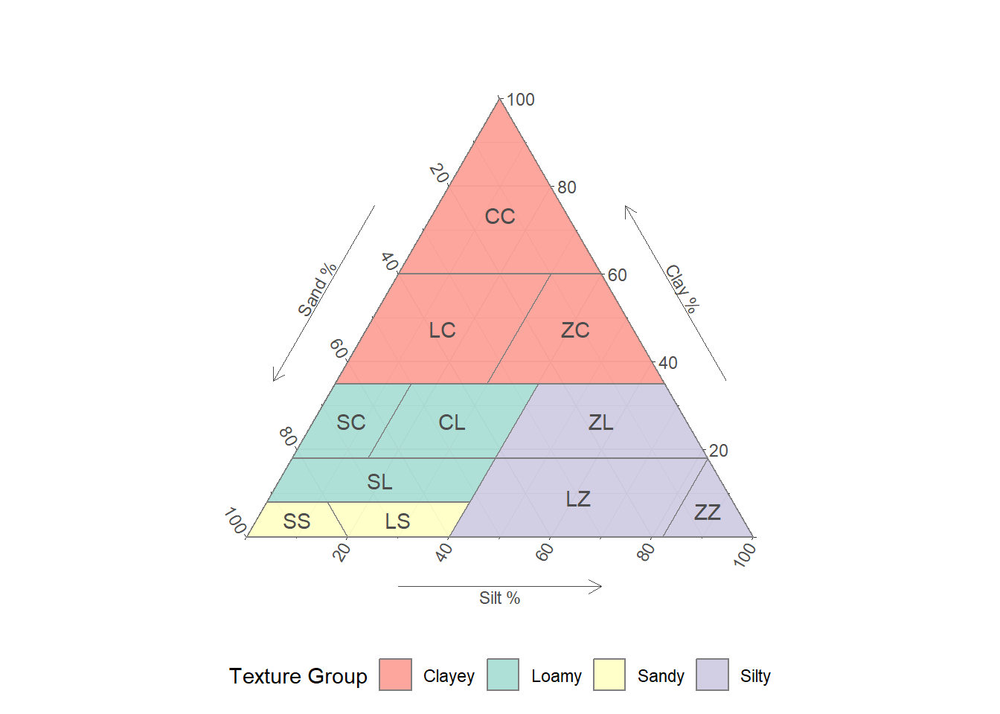

16 Horizon texture
Texture refers to the behaviour of the fine-earth fraction when thoroughly reworked under moist conditions. Texture provides a field estimate of particle size distribution, which is determined in the laboratory. The two measurements are analogous but not identical.
Soil texture is a rapid method that can suggest information about clay mineral type, angularity or roundedness in the sand and silt fractions, organic matter content, and the influence of secondary minerals, as well as the mineral particle size distribution itself. However, the method has precision limits and requires careful user calibration.
Laboratory particle size measurement can involve measurements of particle shape and mineralogy but these methods are labour-intensive and generally confined to a research context. High-throughput analyses confine themselves to assessment of particle size alone, making assumptions about shape and mineralogy (see Loveland and Whalley (2001), for a more detailed discussion.)
Particle size analysis usually involves removal of organic materials and soluble minerals as well as more aggressive aggregate dispersion using shaking and chemical solutions. Following dispersion, measurements of 3-8 specific size fractions are recorded. These data are then usually summarised into a three part sand/silt/clay composition and classified against a texture triangle for efficient communication.
The boundaries of these three size fractions are somewhat unsettled. The silt-clay boundary aligns with some major changes in particle properties; chief among them the emergence of electrostatic behaviour in the clay fraction. The sand/silt boundary can range from 0.02-0.063 µm. See Table 16.1 for the fractions used in NZ and other jurisdictions.
| Jurisdiction | Sand | Silt | Clay |
|---|---|---|---|
| New Zealand, UK | < 2.0 mm | < 0.06 mm | < 0.002 mm |
| Australia | < 2.0 mm | < 0.02 mm | < 0.002 mm |
| USA, Canada | < 2.0 mm | < 0.05 mm | < 0.002 mm |
| Global | < 2.0 mm | < 0.063 mm | < 0.002 mm |
16.1 Texture classes
Sand/silt/clay compositional data can be displayed on a triangle plot (see Figure 16.1), and domains within the plot, or ‘texture classes’, are labelled for ease of communication. It is important to remember that these classes do not have sharp changes in hand-feel texture at their boundaries. A very large number of soil texture triangles have been defined in different jurisdictions.
| Code | Name | Clay range | Silt range | Sand range |
|---|---|---|---|---|
| S | Sand | < 8% | < 20% | ≥ 80% |
| LS | Loamy Sand | < 8% | ≥ 12 - < 40% | ≥ 52 - < 80% |
| SL | Sandy Loam | ≥ 8 - < 18% | 0 - < 40% | ≥ 42 - < 92% |
| LZ | Loamy Silt | < 18% | ≥ 40 - < 82% | < 60% |
| Z | Silt | < 18% | ≥ 82% | < 18% |
| SC | Sandy Clay Loam | ≥ 18 - < 35% | <15% | ≥ 50 - < 82% |
| CL | Clay Loam | ≥ 18 - < 35% | ≥ 15 - < 40% | ≥ 25 - < 67% |
| ZL | Silt Loam | ≥ 18 - < 35% | ≥ 40 - < 82% | < 42% |
| LC | Loamy Clay | ≥ 35 - < 60% | < 30% | ≥ 10 - < 65% |
| ZC | Silty Clay | ≥ 35 - < 60% | ≥ 30 - < 65 % | < 35% |
| C | Clay | ≥ 60% | < 40% | < 40% |
16.1.1 Generalised texture classes
Generalised mineral texture classes for rapid assessment and simple communication are supplied below.
| Code | Name | Description |
|---|---|---|
| C | Clayey | Clay content ≥ 35%, texture class C, LC or ZC |
| Z | Silty | Clay content < 35%, silt content ≥ 40%; texture class Z, LZ, ZL |
| L | Loamy | Clay content 8 - 35%, silt content < 40%; texture class SL, SC, CL |
| S | Sandy | Clay content < 8, silt content, < 40%, texture class S, LS |
| R | Rocky | Fine earth fraction < 15%, dominated by rock fragments > 2 mm |
16.2 Recording soil texture
Soil texture is preferably assessed in the field but can also be assessed from representative bagged samples. Follow the procedure in @fig-texturing. Record one texture code from Table 16.2 per horizon. If desired, add modifiers as discussed below.
@fig-texturing goes here
16.2.1 Sand modifiers
Hand-texture classes can be accompanied by additional information about the sand fraction. These codes can be appended to a texture class as a prefix, e.g. (K)LS for coarse loamy sand.
Note that appreciable coarse sand in a sample leads to underestimates of clay content in hand texturing.
| Code | Name | Description |
|---|---|---|
| K | Coarse | Sand is dominantly 2.0 - 0.6 mm |
| M | Medium | Sand is dominantly 0.6 - 0.2 mm |
| F | Fine | Sand is dominantly 0.2 - 0.06 mm |
16.2.2 Organic modifiers
Hand-texture classes can also be modified to express the presence of elevated soil organic matter and its degree of decomposition (where it remains below the 50% cutoff for organic soil materials, see below). These codes can be appended to a texture class as a suffix, e.g. SL(T) for slightly organic sandy loam. If more detail is desired, organic material type and decomposition can also be appended using Table 16.6 and Table 16.7, e.g. SL(TRM) for a sandy loam containing ~20% visible but degraded flax leaf fragments.
Either of the organic matter abundance qualifiers can be used to signify the ‘peaty topsoil’ NZSC diagnostic.
| Code | Name | Description |
|---|---|---|
| T | Slightly organic | 17-30% organic matter |
| P | Moderately organic | 30-50% organic matter |
16.3 Particle size estimate
Estimating particle size in the field involves compensating for the influences described above and arriving at estimates of sand and clay content (silt can be determined by difference). Record estimated clay and sand to the nearest whole percent. Optionally, add a separate error estimate (± x%) as an expression of confidence.
Example: (K)LS, 70 ± 5% sand, 3% clay for a coarse loamy sand.
16.4 Organic soil materials
Where a horizon is dominated by organic rather than mineral materials (>50% organic matter), the coding system described above is replaced by first describing the organic material type encountered, according to Table 16.6. Where the dominant species contributing to the organic materials can be identified with confidence, they may also be noted as free text.
| Code | Name | Description |
|---|---|---|
| M | Moss | Organic materials dominantly derived from moss and/or herb species e.g. Sphagnum spp. |
| R | Reed | Organic materials dominantly derived from grasses, reeds, flaxes or similar e.g. Phormium spp. |
| T | Tree | Organic materials dominantly derived from woody shrubs and trees, e.g. Kānuka |
| U | Unknown | Origin of organic materials cannot be identified with confidence |
16.4.1 Decomposition modifiers
The degree of decomposition can be added to the material type using Table 16.7, e.g. RM for a reed-dominated layer that is moderately decomposed.
| Code | Name | Description |
|---|---|---|
| F | Fibric | Organic matter weakly decomposed and dominated by visible plant remains |
| M | Mesic | Organic matter moderately decomposed, some visible plant structures but mostly amorphous |
| H | Humic | Organic matter no longer identifiable, minimal fibre content |
16.4.2 Mineral modifiers
Where a mineral fraction among the organic materials is appreciable, the organic texture code can be further modified using the codes in Table 16.3, e.g. RM(L) for a mesic, reed-derived peat with some loamy material mixed in.